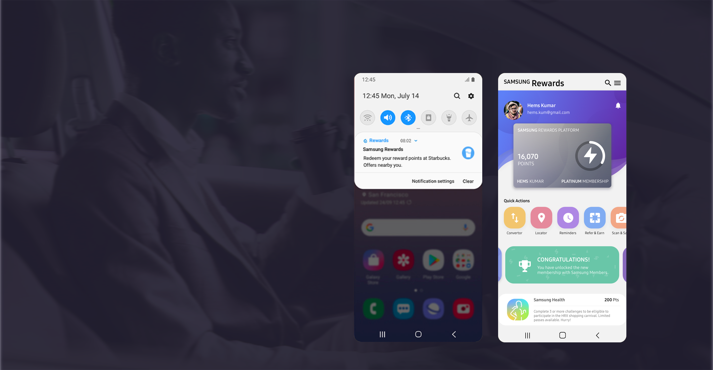

Samsung Rewards Platform
A proposed solution for unified rewards platform for Samsung apps and services in India.

About the Project
Propsed concept of a rewards platform which enables users to discover newer Samsung services and redeem their existing points from a single point access.
The project was aimed at exploring the existing Samsung Apps / Services being offered in India and how they can be unified together for a rewarding user experience for the Samsung customers across the various channels online and offline. Therefore, rewards system or otherwise known as customer loyalty programs system were taken into consideration, to allow Samsung to grow their business that would requires fewer resources and time; that will help retain and increase their customers by turning them into vocal advocates.
My Roles and responsibilities
Product Design Process - Timeline
The Approach
As of June 2018, the services provided by Samsung India to their customers have been very mobile application specific in its approach. There are many previously existing and newly introduced native Samsung apps and services, which have been catering to the one or the other aspect of a daily life of its users.For example Samsung Health for monitoring health, Samsung Pay for making digital payments, Samsung Members for community building, Galaxy apps as a app store for Samsung devices, and many more.
The immediate requirement was to first find answers to the following questions to better identify the need to solve for in this project:
- What are the native apps / services and the ecosystem, that Samsung provides to its users?
- Why designing a rewards platform for Samsung is important?
- Who are the competitors and how are they making use of rewards system?
- How can all these apps and services be unified?
Why is it required?

Existing ecosystem of Samsung apps
Understanding the target users:
The business and design team had taken a decision and identified target user group as to be Millennial and younger generations. Therefore, to better understand target group, the desk research method was undertaken. For which a lot any white papers, survey reports and articles were referenced to know more about the millennial’ behavior over the past years.

|
Key Learnings
Industry projects work under a lot constraints and few assumptions to become the first to market products, which means one has to tweak or innovate on ways to follow the conventional design process.
One has to keep switching the context while working on multiple projects at the same time, which may result into not completely exploring all the aspects of the product and that’s the challenge that every product designer need to overcome while keeping up the product quality.
Being aware of the Design Guidelines, is really important to bring the consistency across all the products a brand has to offer.